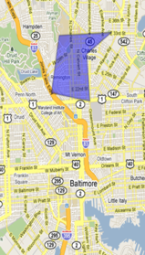

Canvass Boost< Return to Services
Canvass Boost allows you to create canvass lists using drop-down menus to filter your data. Additionally, you can use a Google Map G.I.S. interface to draw a shape around your desired canvass area. Voters located within your drawn boundaries will automatically populate inside your shape. You can then use the drop-down menus to filter by age range, gender, party, and other filters to have a more targeted list.
Once your filters are set, enter the number of canvassers you will have on the ground, and the system calculates the most efficient route path for each of your canvassers to cover each voter inside your drawn boundary.
Contact Us
 Give your campaign a winning boost with our professional suite of products and services.
Give your campaign a winning boost with our professional suite of products and services.
Contact Us